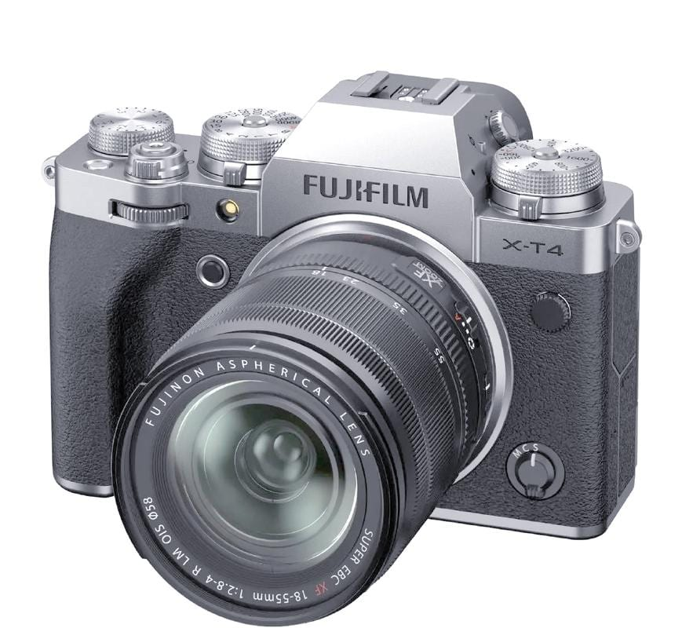

富士 X-T4

带五轴防抖的复古旗舰，照片视频双修。
客观评测
富士 X-T4 搭载 2610 万像素 X-Trans CMOS 4 与五轴机身防抖，最高约 6.5 档补偿。机械快门连拍约 15 张/秒，电子快门可达 30 张/秒，对焦为 425 点混合式，暗光对焦下探 -6EV。视频支持 4K/60p 10-bit 内录并可选 F-Log，双 UHS-II 卡槽与侧翻触屏兼顾照片与视频。续航提升至约 500 张，机身约 526 克，具备防尘防滴性能。
主观点评
X-T4 是少数让人愿意认真把玩的现代相机：顶部三个机械转盘手感扎实，关机后仍像一台复古胶片机。机身防抖让 35mm 镜头手持 1/4 秒也常常可用，胶片模拟直出省去大量后期。侧开式翻转屏自拍与高低角度都方便。重量比前代略增，但换来稳定与续航。对喜欢带相机出门的人来说，它的情绪价值与性能一样出色。
优点与不足
- 机身五轴防抖效果显著，弱光手持更稳
- 胶片模拟直出讨喜，省去大量后期
- 机械转盘操控复古直观，续航大幅提升
- 重量与体积比前代略有增加
- 追焦稳定性相较同级全画幅稍弱
参数规格
| 类型 | APS-C 无反数码相机 |
|---|---|
| 传感器 | 2610 万像素 X-Trans CMOS 4 |
| 像素 | 约 2610 万 |
| 对焦 | 425 点混合自动对焦，暗光约 -6EV |
| 连拍 | 机械快门约 15 张/秒（电子快门约 30 张/秒） |
| 快门 | 机械 1/8000 秒，电子 1/32000 秒 |
| 测光 | 256 区 TTL 测光 |
| 取景 | 约 369 万点电子取景器 + 3 英寸侧翻触摸屏 |
| 防抖 | 机身五轴防抖，最高约 6.5 档补偿 |
| 视频 | 4K/60p，10-bit 内录，F-Log |
| 存储 | 双 SD 卡槽（UHS-II） |
| 重量 | 约 526 克（含电池与卡） |